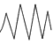

|
Level 1: Creating and Drawing Sounds
PLANNING AND ASSESSMENT
Prior Learning | Possible Learning Outcomes
Starting Points | Music Making Activities | Assessment
Focus Points
Teachers may need to ask focus questions about the technique of manipulating sound-makers to produce different sounds.
For example: "What would happen if you tapped the rim instead of the skin?"
"How can you change the pitch?"
Drawing the music - representing sounds with visual marks. For example, shaker: guiro: 
Prior Learning
- Exploration of the voice
- Exploration of materials for their sound potential
- Playing and naming instruments and identifying them from their sound
- Listening to live sounds and taped music and "drawing" as you listen.
Possible specific learning outcomes include:
The student will:
- Find several sounds from one sound-maker
- Describe their sounds in words
- Draw symbols to represent a range of sounds.
[Back To Top]
Starting Points
- Voice sounds, breathing sounds
- Exploration of found sounds around the room: the heater, venetian blinds, rubbish bin
- Exploration of junk materials: paper plates, rubber bands, plastic cups, flax leaves
- "Find three different sounds you can make with your sound-maker"
- Everyone has the same instrument, e.g. a drum and is asked to find several ways to make sounds with it
- Find, or make up a word to describe one of your sounds.
Music Making Activities
- Some ideas: rubber bands over plastic cups (you need sticky tape to hold the rubber bands in place). Rubber Bands Music
- Students can bring a sound from home: specify something from the kitchen or something that would otherwise be thrown out in the rubbish
- Tubes are a great resource because they can be tapped, rubbed, blown, rolled in the hands or on the ground, blown across, or down and can have materials inside to shake or roll around
- Some questions for you to ask:
- Can you show me how you made that sound?
- What would happen if you did that really fast? Slow? Louder? Softer?
- Can you make the sound higher or lower in pitch?
- How can you make it shorter or longer?
- How else can you change the sound?
The following list of ideas could each be a single session or could be combined into a unit plan. Some are sequential, but others can be used in no particular order.
- Focus listening skills by closing eyes and listening, then listing sounds outside or inside the room
- With eyes closed the students echo the teacher's body percussion pattern on knees, chest, cheeks, hands, identifying the sound by listening
- Play a game of identifying hidden instrument sounds, e.g. tambourine, finger cymbal, wood block
- Distinguish between the sound the instrument makes (e.g. ping, tick, raroro) and the instrument's name (e.g. ukulele, claves, guiro).
If this is easy, try identifying a specific drum. Examples are the handi-drum, the small tambour, or the floor tom. Find a different word for each different sound.
Give every child the same sound-maker. For example a drum, pair of paper plates, pair of stones, or bamboo sticks.
- Individual exploration: find three sounds
- Ask students to demonstrate one of their three sounds when you point to them
- Select three sounds and brainstorm some descriptive words for each
- Devise on the whiteboard some possible symbols to represent each of three other sounds
- Invite a "composer" to point to each symbol for the class to perform together
- In threes, students decide on an interesting order for their invented sounds, score this graphically and share. This could be developed into a performance which takes the form of a "rondo", where the class composition comes "round" regularly.
Sequence
| Whole class composition |
Group "A" composition |
Whole class composition |
Group "B" composition |
Whole class composition |
Assessment
Possible specific learning outcomes for assessment include:
Teacher may ask individuals or groups to describe their sounds in words.
Individuals or groups play a range of sounds from one instrument. If all students have a single instrument there can be a class graphic score from which all students can play.
Individuals or small groups can perform their own special inventions, playing from a graphic score.
Possible tick sheet
| Student able to make several sounds on the one sound-maker |
Student able to describe a sound |
Student able to "draw" sound |
| Name: Date: Yes/No |
Date: Yes/No |
Date: Yes/No |
[Back To Top]
|